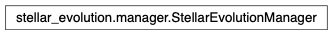

stellar_evolution.manager module¶
Class Inheritance Diagram¶
Define class for managing many stellar evolution interpolations.
-
class
stellar_evolution.manager.StellarEvolutionManager(serialization_path)[source]¶ Bases:
objectClass for managing a collection of stellar evolution inteprolations.
-
__init__(serialization_path)[source]¶ Create a manager storing serialized interpolators in the given path.
- Parameters
serialization_path – The path where to store serialized interpolators.
- Returns
None
-
_create_new_interpolator(*, track_grid, nodes, smoothing, db_session, vs_log_age, log_quantity, num_threads, name=None)[source]¶ Generate the specified interpolation and add it to the archive.
- Parameters
track_grid – See result of _track_grid_from_files()
nodes – see get_interpolator().
smoothing – see get_interpolator().
vs_log_age – see get_interpolator().
log_quantity – see get_interpolator().
num_threads – The number of simultaneous threads to use when constructing the interpolation.
db_session – The database query session to use.
name – The name to assign to the new interpolator. If None, the UUID used to form the filename is used.
- Returns
Created from scratch based on the given arguments.
- Return type
-
static
_define_evolution_quantities(db_session)[source]¶ Define the quantities tracked by VarChangingInterpolator instances.
- Parameters
db_session – The currently active database session.
- Returns
None
-
_find_existing_interpolator(*, track_grid, nodes, smoothing, db_session, vs_log_age, log_quantity)[source]¶ Return the specified interpolation if already exists, otherwise None.
- Parameters
track_grid – See result of _track_grid_from_files()
nodes – see get_interpolator.
smoothing – see get_interpolator.
db_session – The currently active database session.
vs_log_age – see get_interpolator.
log_quantity – see get_interpolator.
- Returns
Pre-serialized interpolation matching the given arguments if one is found in the interpolation archive. If no pre-serialized interpolation exists, returns None.
- Return type
-
_initialize_database(db_engine, db_session)[source]¶ Ensure all database tables exist and contain at least required data.
- Parameters
db_session – An sqlalchemy session, used to update the database.
- Returns
None
-
static
_track_grid_from_files(track_fnames, db_session, model_suite=None)[source]¶ Organize track files in a mass - [Fe/H] grid and verify checksums.
In addition, if model_suite is not None, all tracks are verified to belong to this suite.
- Parameters
track_fnames – See get_interpolator track_fnames argument.
- Returns
keys - the masses of tracks; and values - further dictionaries with keys the [Fe/H] of tracks and values the filename of each track.
- Return type
-
_track_grid_from_grid(mass_list, feh_list, model_suite, db_session)[source]¶ Return a mass - [Fe/H] grid with filenames and checksums.
Fails if multiple tracks are registered for some (mass, [Fe/H], model suite) combination.
- Parameters
mass_list – The masses for which to include tracks.
feh_list – The [Fe/H values for which to include tracks.
model_suite – The software suite from whose tracks to choose.
db_session – A database session to submit queries to.
- Returns
See _track_grid_from_files()
- Return type
-
get_interpolator(*, nodes={'ICONV': 3000, 'IRAD': 3000, 'LUM': 0, 'MRAD': 6000, 'RADIUS': 0, 'RRAD': 3000}, smoothing={'ICONV': 5.0, 'IRAD': 6.0, 'LUM': nan, 'MRAD': 7.0, 'RADIUS': nan, 'RRAD': 6.0}, vs_log_age={'ICONV': True, 'IRAD': True, 'LUM': True, 'MRAD': True, 'RADIUS': True, 'RRAD': True}, log_quantity={'ICONV': 0, 'IRAD': 0, 'LUM': 0, 'MRAD': 0, 'RADIUS': 0, 'RRAD': 0}, track_fnames=None, masses=None, feh=None, model_suite='MESA', new_interp_name=None, num_threads=1)[source]¶ Return a stellar evolution interpolator with the given configuration.
All tracks that the interpolator should be based on must be pre-registered with the manager. Two ways are supported for identifying tracks: as a list of filenames or as a mass-[Fe/H] grid combined with a suite. The first case always works, while the second requires that the set of identified tracks is unique, i.e. for none of the mass - [Fe/H] combinations there are two or more tracks registered for the given suite.
- Parameters
nodes – The number of nodes to use for the age interpolation of each quantity of each track. Should be a dictionary with keys VarChangingInterpolator.quantity_list. See the POET code StellarEvolution::Interpolator::create_from() documentation for a description of what this actually means.
smoothing – The amount of smoothing to use for the age interpolation of each quantity of each track. Should be a dictionary with keys VarChangingInterpolator.quantity_list. See the POET code StellarEvolution::Interpolator::create_from() documentation for a description of what this actually means.
vs_log_age – Use log(age) instead of age as the independent argument for the intperpolation? Should be a dictionary with keys VarChangingInterpolator.quantity_list.
log_quantity – Interpolate log(quantity) instead of quantity? Should be a dictionary with keys VarChangingInterpolator.quantity_list.
track_fnames – A list of files containing stellar evolution tracks the interpolator should be based on.
masses – A list of the stellar masses to include in the interpolation. Unique tracks with those masses and all selected [Fe/H] (see next argument) must already be registered with the database for the given suite. If None, all track masses from the given suite are used.
feh – A list of the stellar [Fe/H] values to include in the interpolation. If None, all track [Fe/H] from the given suite are used.
model_suite – The software suite used to generate the stellar evolution tracks. May be omitted if tracks are specified by filename, but must be supplied if using masses and [Fe/H].
new_interp_name – Name to assign to the a newly generated interolator. Ignored if an interpolator matching all other arguments already exists. If not specified, and no interpolator exists matching the remining arguments, a new interpolator is not generated.
num_threads – If a new interpolator is created this many simultaneous interpolation threads are used.
- Returns
Configured per the arguments supplied or None if no existing interpolator is found and creating a new one is forbidden (see new_interp_name argument).
- Return type
-
register_track(track_fname, mass, feh, model_suite='MESA')[source]¶ Register a track for use in creating interpolators.
-
register_track_collection(track_fnames, fname_rex=re.compile('M(?P<MASS>[0-9.E+-]+)_Z(?P<Z>[0-9.E+-]+).csv'), model_suite='MESA')[source]¶ Add a collection of tracks with [Fe/H] and M* encoded in filename.
- Parameters
-track_fnames – The filenames of the tracks to add.
fname_rex (-) – A regular expression defining groups named ‘MASS’ and either ‘Z’ or ‘FeH’ used to parse the filename for the stellar mass and metallicity each track applies to.
model_suite (-) – The software suite used to generate the stellar evolution tracks.
-